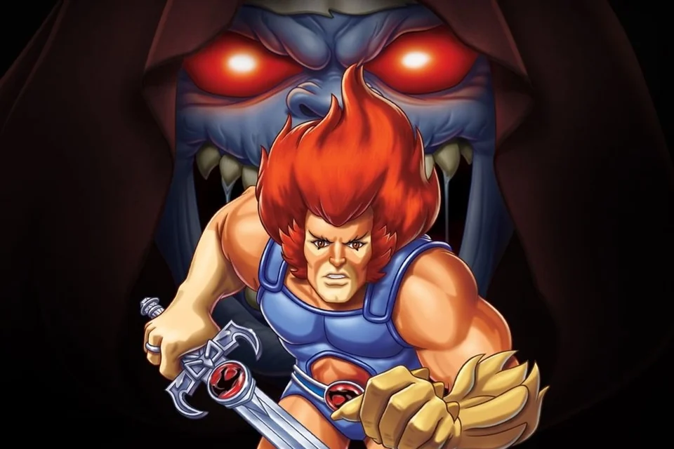

Originalmente batizado como Kakarotto Goku é membro de uma raça fictícia de extraterrestres, os Saiyajins. Logo após seu nascimento, Goku é enviado à Terra por seus pais Bardock e Gine para sobreviver à destruição do Planeta Vegeta
Originalmente batizado como Kakarotto Goku é membro de uma raça fictícia de extraterrestres, os Saiyajins. Logo após seu nascimento, Goku é enviado à Terra por seus pais Bardock e Gine para sobreviver à destruição do Planeta Vegeta
 Naruto é um jovem órfão habitante da Vila da Folha que sonha se tornar o quinto Hokage, o maior guerreiro e governante da vila. Ao se graduar como ninja, descobre que tem um demônio raposa selado dentro de s
Naruto é um jovem órfão habitante da Vila da Folha que sonha se tornar o quinto Hokage, o maior guerreiro e governante da vila. Ao se graduar como ninja, descobre que tem um demônio raposa selado dentro de s
 Nascido em East Blue, Monkey D. Luffy é um rapaz com um sonho bem ambicioso: desde criança, ele sonhava em ser pirata! Com sete anos de idade, ele conheceu o capitão pirata Shanks, seu maior ídolo!
Nascido em East Blue, Monkey D. Luffy é um rapaz com um sonho bem ambicioso: desde criança, ele sonhava em ser pirata! Com sete anos de idade, ele conheceu o capitão pirata Shanks, seu maior ídolo!
Seiya é um órfão japonês adotado pela Fundação Graad e que é enviado para o Santuário de Atena, na Grécia, a fim de receber seu treinamento para se tornar em um Cavaleiro do Zodíaco.
Há 3000 anos. No passado, Meliodas foi treinado por Chandler e foi o líder dos Dez Mandamentos do Clã dos Demônios, agraciado com o Mandamento do Amor e considerado como o mais provável de se tornar o próximo Rei dos Demônios, por sua força e crueldade.
Baki Hanma é o filho de ninguém menos que Yujiro Hanma, o homem mais forte do mundo. Decidido a conquistar o título do seu pai, esse jovem se submete a intensivos treinos. Mas seu objetivo tem consequências: sua determinação atrai cinco terríveis lutadores dispostos a derrotá-lo de todas as formas.

Nascido na Cidade de Pallet, seu maior sonho é se tornar um Mestre Pokémon. Sua jornada em busca de realizar tal sonho começa quando ele completa 10 anos, idade em que aspirantes a treinadores recebem sua licença Pokémon e sua primeira criatura
Saitama é careca e o homem mais forte de Z. Após ter realizado treinos exaustivos, escolheu combater o crime apenas para se divertir e está em busca de oponentes a sua altura

Vegeta surge na série como o orgulhoso príncipe da raça Saiyajin. Ele visita a Terra com seu tutor Nappa com o intuito de utilizar as Esferas do Dragão para desejar a imortalidade. Ambos partiram para a Terra, quando souberam da derrota de Raditz e chegaram ao planeta após um ano.

Roronoa Zoro, também conhecido como O Caçador de Piratas, é um pirata e ex-Caçador de Recompensas, e também um espadachim que usa 3 espadas. Ele foi o primeiro membro a se juntar aos Piratas do Chapéu de Palha

ThunderCats conta as aventuras de um grupo de felinos sobreviventes do planeta Thundera. O primeiro episódio da série começa com a destruição de Thundera, forçando os ThunderCats (uma espécie de nobreza Thunderiana) a fugir de seu planeta natal.

um garoto tímido que ama todos os tipos de jogos, mas muitas vezes é intimidado ao seu redor. Um dia, ele ganha peças fragmentadas de um antigo artefato egípcio, o Enigma do Milênio Millennium Puzzle